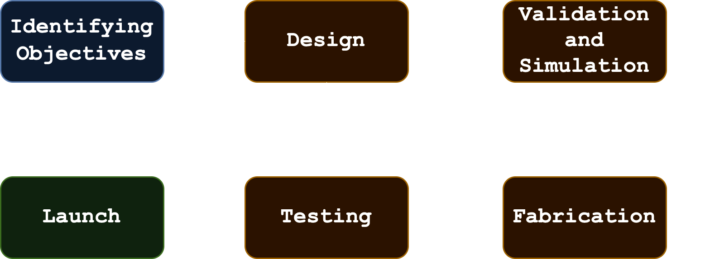
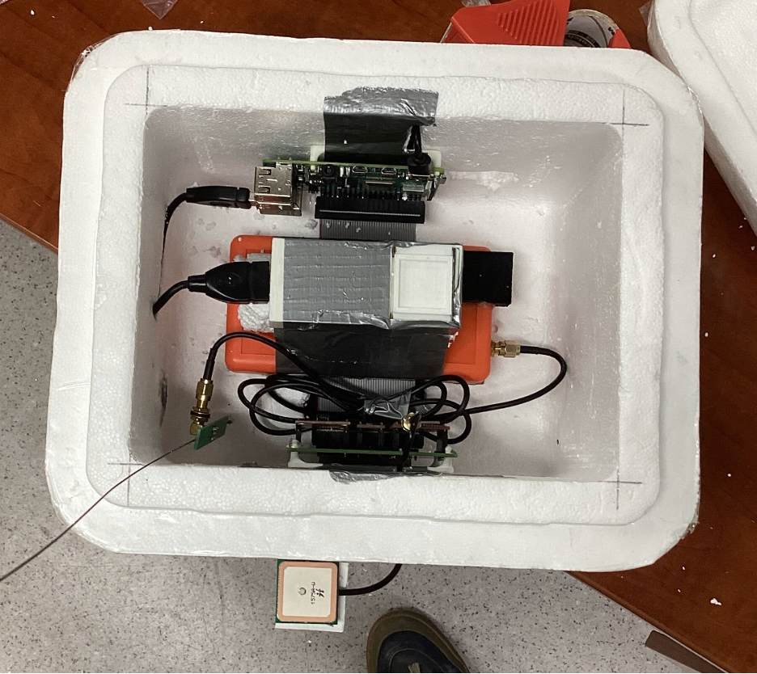
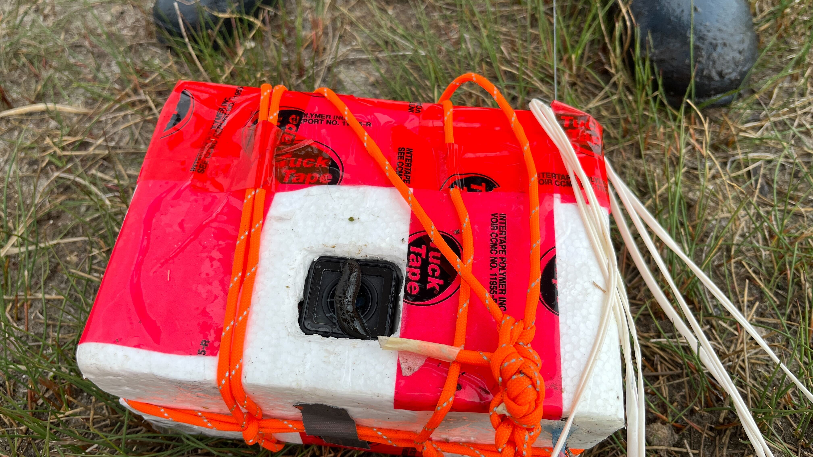
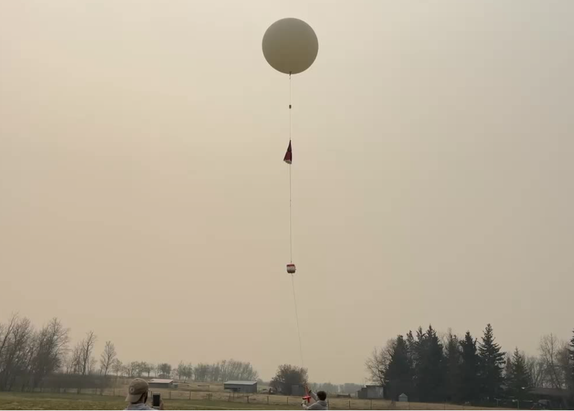

My first project with the
AlbertaSat team was Dedicated Electron Balloon Observatory for Radiation
Belt Analysis (DEBORA) mission. My primary role on this team was developing a chasis for the payload, which was built to study Bremstrahhlung X-rays
in the stratosphere. I also performed preliminary buoyancy calculations to size the balloon and helium requirements.
Read more about the mission itself
here on the
AlbertaSat website.
Chasis design involved a rigorous design process to ensure that deliverables
were met. The chasis had to be designed such that the sensitive sensors and computers remained at
an appropriate temperature, the equipment could survive an impact with the ground at high speeds, and that
the components were held in place throughout the balloon's mission. CAD software SolidWorks was utilized to build
prototypes and develop an idea of where components belong. My primary role was to ideate chasis designs and simulate
the models and test the prototypes.

The bulk of my testing was to ensure that the components inside the chasis remained at an appropriate thermal level
throughout the flight. This was done first by formulating general heat flux loss equations given varying materials and
geometry. Prototypes were also placed in thermal chambers with sensors to measure the heat losses expected. Metal, plastics, composites, and even wood were all considered as potential materials, but in the end a foam box
proved to be the simplest and cheapest design. The final fabrication and testing occured after my time on the balloon mission team,
and the mission was finally launched on May 11th 2024 during an intense solar storm to massive success. See images from the
mission below.


